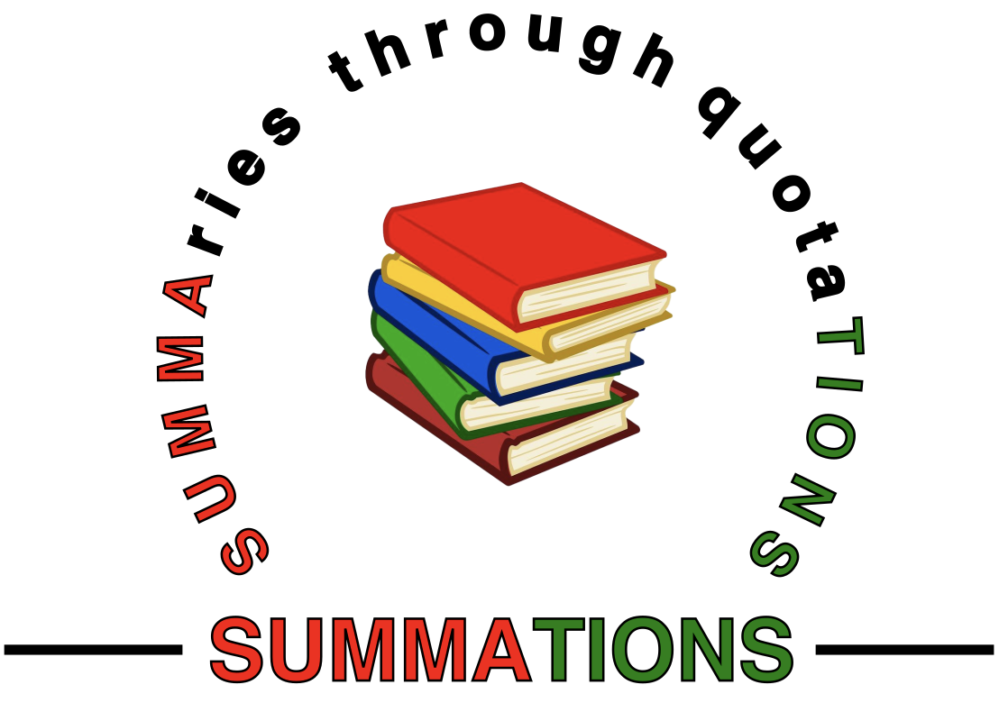

Determined
A Science of Life Without Free Will
Robert M. Sapolsky
2023
Page numbers are from the 1st printing, Penguin Press hardcover edition
Chapter 1 - Turtles all the way down
Here is the point of this book: While it may seem ridiculous and non-sensical to explain something by resorting to an infinity of turtles all the way down, it actually is much more ridiculous and non-sensical to believe that somewhere down there, there's a turtle floating in the air. [...] when you behave in a particular way [...] it is because of the determinism that came just before, which was caused by the determinism just before that, and before that, all the way down. The approach of this book is to show how that determinism works, to explore how the biology over which you had no control, interacting with environment over which you had no control, made you you.
pp. 2-3
We are nothing more or less than the cumulative biological and environmental luck, over which we had no control, that has brought us to any moment.
p. 4
there is no free will. This is what I have concluded, for a long, long time. And even I think that taking that seriously sounds absolutely nutty.
p. 6
no single result or discipline can [disprove free will]. But [...]put all the scientific results together, from all the relevant scientific disciplines , and there's no room for free will. [...] Crucially, all these disciplines collectively negate free will because they are all interlinked, constituting the same ultimate body of knowledge. [...] There is not a single crack of daylight to shoehorn in free will. [...] The first half of the book's point is to rely on this biological framework in rejecting free will. [...] even I think it's crazy to take seriously all the implications of there being no free will. And despite that, the goal of the second half of the book is to do precisely that, both individually and societally. [...] The book's intentionally ambiguous title reflects these two halves [...]
pp. 8-9
p.
p.
p.